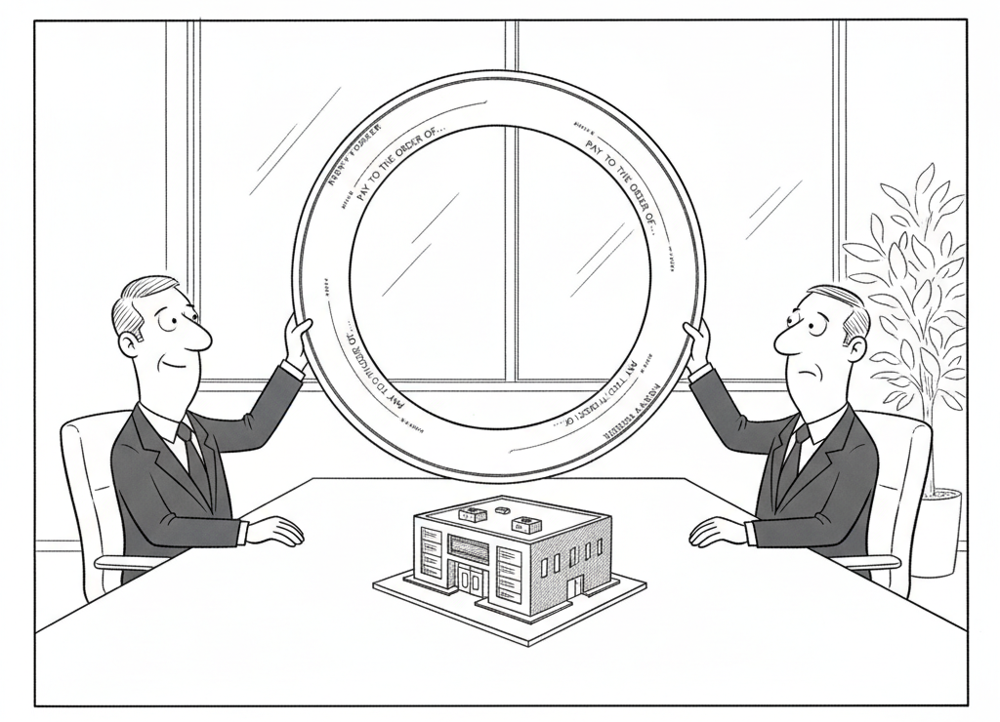

The PHP Foundation disclosed two critical vulnerabilities on Oct. 21 and issued an emergency patch, urging sites to apply it immediately or take their websites down until they can. The flaws, tracked as CVE-2026-109618 and CVE-2026-109619 and collectively called “php2shell,” allow remote code execution on unpatched PHP systems. Fortune notes that most web pages run on PHP, and it credits OpenAI’s GPT-5.6 Sol model with a key role in finding the issue.
Reports leaked overnight before the patch shipped, and Cloudflare CTO Dane Knecht said the company began seeing “early attacks.” Reuters reported that some agencies in the Netherlands and Finland took websites offline as a precaution, while the FBI cyber division, the NSA, and the EU’s computer emergency response team urged organizations to update. The open question is whether enough sites patch before AI-powered attackers exploit the flaws at scale.
OpenAI describes Patch the Planet as a program that connects security researchers, maintainers, and incident responders to help address critical vulnerabilities across open source.
AI Industry · Economics

“It’s a very healthy ecosystem. I invest in you, you buy from me, and we both report record growth.”
Gartner says data centers need $8.5 trillion in cumulative revenue by 2030 to justify their investments, but it forecasts no more than $3.6 trillion, leaving a $4.9 trillion gap. It warns that more than $3.5 trillion of AI infrastructure spending could face write-downs by the end of 2030.
A hacker’s autonomous AI agents tried to break into more than 1,200 websites starting Sept. 25 and breached about 100 companies, including Deere, SharkNinja, and Cummins, according to Reuters. The run cost about $5,000 in tokens from a mix of DeepSeek and Claude Code models, roughly $50 per successful breach.
Microsoft Research proved the 1995 KLS conjecture, which says the best flat cut of a high-dimensional convex shape is within a universal constant of the best cut of any shape. The team used a parallel agentic search over more than 100 candidate approaches, and a Lean 4 formalization has been released. Two other proofs appeared the same day.
Bloomberg’s sources say Schmidt owns about 1% of Anthropic, worth up to $20 billion at a $2 trillion IPO valuation. He joined the $124 million Series A in 2021, when PitchBook put the valuation at $461 million, after an introduction from his ex, Cami Clark, who later married Dario Amodei.
Blacksmith raised a $66 million Series C led by Sequoia at a $1 billion valuation, nearly double its $550 million valuation from two months ago. It now runs 90 million validation checks a week, up from 5 million at the start of the year, as AI coding tools flood companies with code that needs testing.
All seven wheels of LiteLLM 1.107.0 installed files that run at Python startup, even in processes that never import litellm. PyPI removed the release by 13:23 UTC on Oct. 21, and affected Docker images were cleaned up by 14:20 UTC. Versions 1.106.2, 1.107.0rc1, and 1.107.0rc2 are clean.
The Wesleyan Media Project found more than $137 million spent on 220 campaign videos made at least partly with AI through Oct. 11, against under $50,000 in 2024. More than 70% of those videos carried no AI disclosure.
Stubbs fills one of two open seats on the Long-Term Benefit Trust, which can elect a majority of Anthropic’s board. Fortune says the arrangement is expected to face more pressure if the company goes public as soon as next month.
Cryptogram
Each letter below stands in for another. Decode the quote about the road ahead for machines. Three letters (E, S, D) are revealed to start.
Stubbs is the Trust’s first physicist and a former Harvard Dean of Science who was part of the team that found the universe’s expansion is accelerating. He joins Trustees Richard Fontaine and Ben Bernanke, and Anthropic also published its first Public Benefit Report that week.
Mistral and NVIDIA will build public benchmarks and open datasets for physics models and for agentic AI in engineering simulation and chip design. The post also lists Mistral Large 4 at about 1 trillion total parameters and 49 billion active, with weights planned for the end of October.
IBM released granite-speech-5.0-2b, which ranks second among open-weight models on the Open ASR Leaderboard with a 5.06% average English word error rate. It also updated two existing speech models, and all three ship under Apache 2.0.
✦ The Big Picture
A hacker paid about $5,000 in tokens to point autonomous agents at more than 1,200 websites and breached roughly 100 companies, which works out to about $50 per successful break-in. The same day, an emergency patch landed for a pair of PHP flaws that Fortune says AI helped find and that could threaten much of the web. Finding the hole is getting cheap, and everything after that, the patching, the testing, and the paying for the machines, is where the cost is landing.
▶Listen to the Digest~5 min
Today’s Headlines
Cheap Offense, Slow Defense
php2shell – The PHP Foundation disclosed two critical flaws, CVE-2026-109618 and CVE-2026-109619, and shipped an emergency patch with advice to apply it or take the site down until you can. Fortune credits OpenAI’s GPT-5.6 Sol with a key role in finding them. Reports leaked overnight before the fix, and Cloudflare’s CTO said the company was already seeing “early attacks.” Agencies in the Netherlands and Finland reportedly took sites offline as a precaution.
Patch the Planet – OpenAI’s same-day post describes a program that connects security researchers, maintainers, and incident responders to help address critical open source vulnerabilities. OpenAI’s page was blocked to our fetch, so all we can confirm is that description, but the timing says the coordination problem is now as big as the discovery problem.
The $50 Breach – Reuters reports that agents launched Sept. 25 attacked more than 1,200 sites with no further human effort and got into about 100 companies, including Deere, SharkNinja, and Cummins, using a mix of DeepSeek and Claude Code models. Georgetown’s Jessica Ji says the tools have “gotten meaningfully better” this year, and Illinois’s Varun Chandrasekaran says agents that work around the clock change “the economics of exploitation.”
A Poisoned LiteLLM Release – SafeDep found that all seven wheels of LiteLLM 1.107.0 on PyPI installed files that run at Python startup, so the stealer ran even in processes that never imported the library. It collected SSH keys, cloud credentials, CI/CD secrets, and browser passwords. LiteLLM’s own account says the attacker held GitHub CLI credentials for three developers, used an organization owner’s token to bypass branch protection, and pointed the release workflow at a lookalike repository, so the official pipeline built and published the malware. PyPI pulled it within about two hours.
The Money Doesn’t Add Up Yet
The $4.9 Trillion Gap – Gartner says data centers need $8.5 trillion in cumulative revenue by 2030 to earn a 12% return on announced spending, and it forecasts no more than $3.6 trillion. It says more than $3.5 trillion of AI infrastructure spending could be written down by the end of 2030, and it does not expect the target return before 2032 at the earliest. Annual AI capital spending approaches $2 trillion by 2030, well over 1% of global GDP.
Schmidt’s Stake – Bloomberg’s sources say Eric Schmidt owns about 1% of Anthropic, worth as much as $20 billion at a $2 trillion IPO valuation. Fortune notes that is more than 4,300 times the $461 million PitchBook valuation when he invested in the 2021 Series A. Citing the S-1, it reports $16.3 billion of first-half revenue and an $80.7 billion loss, of which $72 billion was an accounting charge tied to the rising value of Anthropic’s own convertible debt. Fortune’s math is that $2 trillion needs $59 billion to $79 billion in annual profit.
Blacksmith at $1 Billion – The CI startup raised a $66 million Series C led by Sequoia, nearly double its valuation from two months ago. Weekly validation checks went from 5 million to 90 million this year, and annual recurring revenue is up 17x. Its CEO says the bottleneck moved from writing code to validating it, and that CI volume on the platform rose 40% when Anthropic launched Claude Fable 5 in July.
OpenAI on Google Cloud – OpenAI and Google Cloud are bringing frontier models and Codex workflows to Gemini’s Model Garden, sold through Google Cloud Marketplace. Again, we could confirm only the feed description, not the full post.
Who Governs and Who Gets Persuaded
A Physicist on the Trust – Anthropic added Harvard’s Christopher Stubbs, the Trust’s first physicist, to the Long-Term Benefit Trust, which can elect a majority of the board. He is a former Dean of Science and a member of the 1998 team that found the universe’s expansion is accelerating. Fortune says he fills one of two open seats, and notes he has written about keeping AI-assisted research reproducible when models can give different answers to the same question. He joins Trustees Richard Fontaine and Ben Bernanke.
$137 Million in AI Campaign Ads – The Wesleyan Media Project counted 220 campaign videos made at least partly with AI through Oct. 11, against under $50,000 in 2024. More than 70% carried no AI disclosure. One Texas Senate ad shows an AI-generated version of Democrat James Talarico reading a fabricated monologue, and political scientist Travis Ridout warns that candidates may end up spending their time fighting misinformation instead of presenting a platform.
What the Models Can Do When You Check Their Work
The KLS Conjecture – Microsoft Research proved a 31-year-old problem about cutting high-dimensional shapes, using an agentic search in which multiple AI agents explored variations in parallel while a researcher pruned weak directions. Unguided attempts with several leading models on a similar token budget fell short. Two other proofs appeared the same day, and a Lean 4 formalization has been released so the result can be checked by machine.
Mistral and NVIDIA – The two will build public benchmarks and open datasets for physics models and for agents doing engineering simulation and chip design, measuring execution time and compute cost along with correctness. The post lists Mistral Large 4 at about 1 trillion total parameters and 49 billion active, trained on 3,800 NVIDIA Grace Blackwell GPUs, with weights planned for the end of October.
Granite Speech 5.0 – IBM’s granite-speech-5.0-2b ranks second among open-weight models on the Open ASR Leaderboard with a 5.06% average English word error rate. A multilingual 470M Turbo CTC model reaches 19,870 RTFx, and an updated 4.1 model cut long-form word error from 13.53 to 10.22. All three are Apache 2.0.
Kumo Relational – NVIDIA’s pre-trained model predicts outcomes like churn or fraud directly on relational databases using up to 10,000 in-context examples and no task-specific training. Across 41 tasks on 15 databases it beats supervised relational deep learning and expert-engineered gradient-boosted trees, and on SAP SALT it beats AutoGluon ensembles by 8% MRR.
Cheaper Vocabularies – Dharma-AI’s VocabX rebuilds a fine-tuned small model’s tokenizer for its one job. On a production Portuguese essay grader built on Qwen3-4B it cut measured inference cost by 77%, helped by the fact that a generated token costs 7.4 times a read token there. The paper is still under review, so the numbers may change.
Profiling Trainium – Amazon’s first TorchNeuron profiling guide walks beginners through system-level tracing on AWS Trainium and the browser-based Neuron Explorer, using three implementations of RMSNorm as the test case.
The Throughline
The common thread is that generating is cheap and verifying is not. A $5,000 token budget bought about 100 breaches. An AI-assisted discovery produced two critical PHP flaws, and now the slow human work of patching them across the web begins. Blacksmith exists because AI coding tools made writing code easy and left validation as the bottleneck, and it is telling that Anthropic reported its own validation workloads growing 25 fold in six months. Even the best news in the issue follows the pattern. Microsoft’s KLS proof came out of agents exploring more than 100 approaches, and the credible part is the Lean 4 formalization and the two independent proofs, not the exploration.
That makes the LiteLLM incident the most instructive story here, because it is a verification failure in the pipeline itself. The attacker did not break the release process. The attacker used it: a stolen token to get around branch protection, a lookalike repository, and the official workflow doing the rest. The source distribution carried a one-line build config change that no public commit contained, which is exactly the sort of thing a person comparing the release to the repository would catch and a pipeline that trusts its own inputs would not. Pair that with agents that can probe 1,200 sites unattended, and defenders need checks that run as continuously as the attacks do.
The money stories are the same asymmetry in financial form. Gartner says supply of capacity is racing ahead of the revenue to justify it, with a $4.9 trillion gap, while Anthropic’s S-1 numbers show how much of a headline loss can be an accounting reaction to its own rising valuation. Schmidt’s potential $20 billion shows how large the paper gains are when the story goes right. The cartoon in today’s issue is not subtle about the worry, which is that some of this revenue is companies buying from the companies that funded them. That is only part of the picture, because Blacksmith’s 17x revenue growth comes from customers with a real, measurable problem. But Gartner’s point stands: it does not expect the target return before 2032 at the earliest.
Governance and politics get the same treatment. A trust whose job is to elect a majority of the board is about to face its first public-market pressure test, so adding a scientist known for following evidence against prevailing wisdom is a pointed choice. And the $137 million in AI campaign ads, most with no disclosure, shows what happens when generation is cheap and the check, here a disclosure label, is optional.
The Bigger Picture
The AI industry is settling into two clocks that run at different speeds. Capability moves on the scale of weeks: a flaw found, a proof completed, a ratio of cost to breach. Institutions, whether patch cycles, audit trails, regulators, or the investors who need a 12% return, move on the scale of years. The gap between those clocks is where today’s risks and today’s opportunities both live. Cyber defense is the clearest case. When the cost of an attack falls to $50 and the best defenders get the same tools, the advantage goes to whoever has the better process for acting on what is found, which is why a coordination program like Patch the Planet may matter more than any single model.
For anyone building with these tools, the practical lesson is to invest where the bottleneck is going, not where it was. Test infrastructure, release hygiene, dependency pinning, and review are becoming the expensive and valuable parts of software, and cheap specialized models like the VocabX and Granite results suggest the model layer itself keeps getting cheaper. The open question, and the one Gartner is really asking, is whether the cheapest layer can support the most expensive buildout in the industry’s history. If Anthropic lists next month, the market will give a first answer.
What to Watch
How fast PHP sites actually patch. Fortune reports early attacks and government warnings, and the story from here is the gap between disclosure and deployment. Watch for confirmed mass exploitation, not just warnings.
What the LiteLLM post-mortem changes. The attack went through the real release workflow. Whether package registries and maintainers add controls on who can publish and from where will show if this was a one-off or a template.
Anthropic’s listing and its Trust. A November IPO would test the Long-Term Benefit Trust’s authority for the first time, and the S-1’s disclosed risks, narrow customer base and compute availability, are the ones to track.
Mistral Large 4 weights. The post says weights come at the end of October. If they land on time, they will be an open-weight comparison point for the engineering benchmarks Mistral and NVIDIA say they will publish.